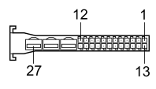

C020A PASSENGER SIDE DASHBOARD EARTH (DASHBOARD)
- Path
- Electrical equipment > 3 CONNECTORS > C EARTHS > C020 PASSENGER SIDE DASHBOARD EARTH > C020A PASSENGER SIDE DASHBOARD EARTH (DASHBOARD)
- Kind
- connector pinout (pin -> wire colour -> other end)
- Applies to
- all engines; all production periods
- Interactive page
- https://sloeber94.github.io/elrnDB-fCrm/en/#/194004828
Applies to: all engines; all production periods

Wiring | Colour |
|---|---|
NERO (black) |
Pin | Cable | Destination | |||
|---|---|---|---|---|---|
Sec.. | Colour | Node | Connect. | Pin | |
1 | 1,5 | N (black) | 10 | ||
2 | 1,5 | NZ (black with violet stripe) | X | 6 | |
24 | |||||
A4 | |||||
2 | 1,5 | N (black) | X | 3 | |
1 | |||||
1 | |||||
3 | 2,5 | N (black) | 8 | ||
4 | 2,5 | N (black) | 7 | ||
5 | 1,5 | N (black) | X | 3 | |
1 | |||||
1 | |||||
6 | 0,5 | N (black) | 4 | ||
7 | 0,5 | N (black) | 10 | ||
8 | 1 | N (black) | X | 6 | |
6 | |||||
9 | 0,5 | N (black) | 2 | ||
11 | 0,5 | NZ (black with violet stripe) | 2 | ||
12 | 0,5 | N (black) | 12 | ||
Topics linked from this page (17)
- 20 DASHBOARD
- B002H JUNCTION UNIT UNDER DASHBOARD (DASHBOARD)
- D021 DASHBOARD/AIR CONDITIONING-HEATER COUPLING
- D047 CLOCK SPRING COUPLING
- G030 GLOVE COMPARTMENT LIGHT
- H003 IGNITION DEVICE
- H005A STEERING COLUMN SWITCH UNIT (DASHBOARD)
- H036 CONTROLS ON TUNNEL
- I031 CLUTCH PEDAL SWITCH
- M047B TYRE INFLATION PRESSURE CONTROL UNIT (DASHBOARD)
- M053 AUTOMATIC TRANSMISSION GEAR SELECTOR CONTROL UNIT
- M089 STEERING LOCK CONTROL UNIT (NBS)
- M091 SLEWING CONTROL UNIT
- M092 STEERING ANGLE CONTROL UNIT (NAS)
- P020A RADIO (DASHBOARD)
- P020F RADIO (DASHBOARD)
- P050 CIGAR LIGHTER / CURRENT SOCKET
Topics that link to this page (24)
- B002H JUNCTION UNIT UNDER DASHBOARD (DASHBOARD)
- D021 DASHBOARD/AIR CONDITIONING-HEATER COUPLING (DASHBOARD)
- D021 DASHBOARD/AIR CONDITIONING-HEATER COUPLING (DASHBOARD)
- D047 CLOCK SPRING COUPLING (DASHBOARD)
- G030 GLOVE COMPARTMENT LIGHT (DASHBOARD)
- H003 IGNITION DEVICE (DASHBOARD)
- H005A STEERING COLUMN SWITCH UNIT (DASHBOARD)
- H036 CONTROLS ON TUNNEL (DASHBOARD)
- I031 CLUTCH PEDAL SWITCH (DASHBOARD)
- I031 CLUTCH PEDAL SWITCH (DASHBOARD)
- M047B TYRE INFLATION PRESSURE CONTROL UNIT (DASHBOARD)
- M053 AUTOMATIC TRANSMISSION GEAR SELECTOR CONTROL UNIT (DASHBOARD)
- M089 STEERING LOCK CONTROL UNIT (NBS) (DASHBOARD)
- M091 SLEWING CONTROL UNIT (DASHBOARD)
- M091 SLEWING CONTROL UNIT (DASHBOARD)
- M091 SLEWING CONTROL UNIT (DASHBOARD)
- M091 SLEWING CONTROL UNIT (DASHBOARD)
- M092 STEERING ANGLE CONTROL UNIT (NAS) (DASHBOARD)
- P020A RADIO (DASHBOARD)
- P020A RADIO (DASHBOARD)
- P020A RADIO (DASHBOARD)
- P020A RADIO (DASHBOARD)
- P020F RADIO (DASHBOARD)
- P050 CIGAR LIGHTER / CURRENT SOCKET (DASHBOARD)